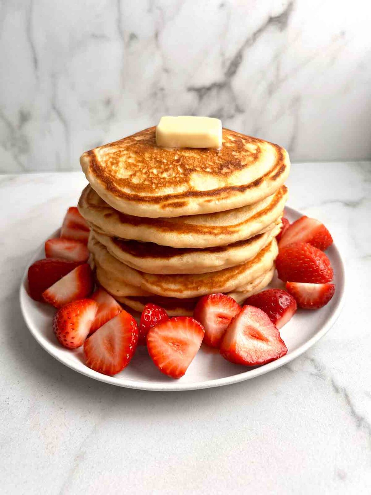

Home

DESCRIPTION
Good morning, breakfast people! Lately, a cozy stack of pancakes has been my favorite way to start the morning. If you've never made pancakes from scratch before, this recipe is the perfect place to start.
This recipe comes together in mere minutes and makes soft, fluffy pancakes every time. These pancakes are the perfect vessel for all your favorite toppings... butter... maple syrup... cream... fresh fruit... you name it.
My mother always says my pancakes are the best, and not to toot my own horn, but I think they are better than most breakfast restaurants. Homemade is just so much better, and when you're not in a rush to cook for hundreds of people, you can take your time to make them just right (not saying this recipe is difficult or time-consuming! It's really easy...)
I personally do not like it when pancakes are overly sweet. I think the sweetness should come from the toppings. I only add about 2 tablespoons of sugar to the batter- just enough to balance the other flavors without making it taste like a dessert. You can use any milk you like (dairy or non-dairy) and adjust the sugar to suit your taste.
INGREDIENTS
- Flour: I use all-purpose flour. Make sure you spoon and level this into your measuring cup so you don't end up with too much.
- Sugar: A little sugar is needed to balance the flavors.
- Baking powder>: 1 tablespoon. Make sure you DO NOT use baking soda. I have had readers do that in my other recipes, and it always turns out not great.
- Salt: To bring out all the flavors.
- Milk: You can use dairy or non-dairy milk. We just need moisture here.
- Egg: Helps bind the ingredients together
- Melted butter or oil: For making the pancakes extra soft and moist.
- Vanilla extract: For flavor.
- STEP 1: To a large bowl, add the flour, sugar, baking powder, and salt. Give it a good whisk to combine.
- STEP 2: In a medium bowl, whisk together the milk, egg, melted butter, and vanilla extract. It's okay if the butter solidifies at this step.
- STEP 3: Pour the wet ingredients into the bowl of dry ingredients, then whisk until JUST combined (there should still be lots of lumps). Be careful not to over-mix, or else they will not be as fluffy.
- STEP 4: Heat a nonstick pan over medium-low heat. Scoop ¼ cup of batter into the pan and cook for 2 minutes until the edges dry up and bubbles begin forming on the surface.
- STEP 5Flip and cook for another 1-2 minutes until golden brown.
- STEP 6Serve with syrup or your favorite toppings!